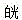

A.宣肺祛邪
B.化痰降逆
C.开郁降气平喘
D.补益肺气
E.补肾纳气
参考答案：A B C D E
A.热伤血络
B.气不摄血
C.瘀血内阻
D.寒凝血脉
E.情志抑郁
参考答案：A B C
A.火邪
B.水湿
C.痰饮
D.瘀血
E.湿热
参考答案：C D
A.心血瘀阻
B.寒凝心脉
C.痰浊闭阻
D.心肾阴虚
E.阳气虚衰
A.肝郁
B.心脾亏虚
C.胆怯
D.表邪入里
E.痰热内盛
参考答案：A B C E
A.理气
B.化痰
C.止痛
D.活血
E.解郁
参考答案：A B E
A.忧思郁怒，肝气郁结
B.郁怒伤肝，肝气犯胃
C.饮食不节，损伤脾胃
D.心血不足，心失所养
E.禀赋不足，脾胃虚弱
参考答案：B C E
A.大便干结
B.头晕眼花
C.形体消瘦
D.眩晕耳鸣
E.脉细
参考答案：A E
A.一侧胁肋疼痛
B.两侧胁肋疼痛
C.腹痛、腹胀
D.胃纳正常
E.大便粪质清稀
参考答案：A B
A.排便次数增多
B.里急后重
C.腹痛腹胀
D.便下赤白脓血
参考答案：A C E
A.生殖系统肿瘤
B.乳腺肿瘤
C.神经内分泌系统肿瘤
D.放疗后骨髓抑制
E.化疗后骨髓抑制
A.止血不留瘀
B.血证初起禁用大量凉血止血药
C.夹有血块者，忌单纯使用止血药
D.瘀阻出血慎用炭类止血药
E.分证分型辨证论治
A.带下色白或淡黄，质黏稠，无臭气，绵绵不断
B.面色白或萎黄，四肢不温，两足跗肿
C.精神疲倦，纳少便溏
D.五心烦热，失眠多梦
E.舌淡，苔白，脉缓弱
A.茯苓、猪苓
B.车前子、泽泻
C.茵陈、黄柏、栀子
D.丹皮、赤芍、牛膝
E.生地、黄芩、木通
参考答案：A B C D
A.补中益气汤
B.清经散
C.两地汤
D.丹栀逍遥散
E.四君子汤
A.量
B.色
C.质
D.气味
E.舌脉
A.血热
B.气虚
C.血瘀
D.虚热
E.血虚
参考答案：A B D
A.气血虚弱
B.肝肾亏损
C.阴虚内热
D.血枯瘀阻
E.肾阳虚衰
参考答案：B D
A.肾虚精亏，冲任不足
B.阳虚无以温煦脏腑，气血生化乏源，冲任亏虚
C.气滞血凝，冲任不畅
D.血为寒凝，运行不畅
E.痰湿壅滞冲任，气血不畅
A.经期不定
B.月经或提前或延后7天以上
C.经乱连续3个周期
D.经量过多
E.经期延长
参考答案：B C
A.肾气不足
B.阳虚寒凝
C.痰湿阻滞
D.脾气虚弱
E.肝气郁滞
参考答案：A D E
A.肾虚不足，冲任不固
C.肝气郁滞，冲任失调
D.脾气虚弱，血海不固
参考答案：A C D
A.冲脉
B.阴维脉
C.督脉
D.带脉
E.任脉
A.不是气血运行的主要通道
B.分布没有正经规则
C.与脏腑不直接络属
D.相互间无表里关系
E.人之气血并非常行奇经
参考答案：B C D
A.手太阴经
B.足厥阴经
C.足太阴经
D.手少阴经
E.手厥阴经
A.两胁痛，多是肝胆病变
B.缺盆中痛，多是肺的病变
C.前额疼痛，多与阳明经病有关
D.头两侧疼痛，多与少阳经病有关
E.巅顶疼痛，多与太阴经有关
A.调节机能平衡
B.感应传导
C.通行气血，濡养脏腑组织
D.沟通表里上下
E.联系脏腑器官
A.内脏病变反映于五官九窍的途径
B.五脏病变相互影响的途径
C.内脏病变反映于体表一定部位的途径
D.脏与腑之间病变相互影响的途径
E.外邪由表入里的途径
A.加强相互表里的两条经脉在体内的联系
B.加强足三阴经、足三阳经与心脏的联系
C.扩大十二经脉的主治范围
D.加强十二经脉对头面的联系
E.加强体表与体内、四肢与躯干的向心联系
A.足太阴经
B.足少阴经
C.足阳明经
D.任脉
E.足厥阴经
A.足阳明经
B.足太阳经
C.手太阳经
D.手少阳经
E.手阳明经
A.阳陵泉
B.廉泉
C.下关
D.内关
E.攒竹
A.少府
B.劳宫
C.听宫
D.曲池
E.环跳
A.膏肓俞
B.支沟
C.中府
D.肩井
E.悬钟
A.足厥阴肝经
B.手太阳小肠经
C.足阳明胃经
E.手阳明大肠经
参考答案：A C D E
A.腰痛
B.妇科病
C.小便不利
D.疝气
E.呃逆
参考答案：B C D E
A.遗尿
B.小便不利
C.咽喉肿痛
D.耳鸣耳聋
E.水肿
A.关冲、曲池、少商、头临泣
B.外关、中渚、液门、角孙
C.丝竹空、阳池、关冲、支沟
D.大椎、风池、廉泉、关冲
E.中脘、外关、内关、足三里
A.偏头痛
B.耳目疾患
C.神志病
D.咽喉病
E.小便不利
A.翳明
B.上明
C.鱼腰
D.太阳
E.球后
A.风市
B.百虫窝
C.鹤顶
D.血海
E.八风
A.听宫
B.下关
C.颊车
D.耳门
E.听会
A.高热
B.昏迷
D.中暑
E.泄泻
A.肾经井穴
B.为肾经经气所出
C.五行属金
D.可治失音
E.可治小便不利
A.胸胁痛
B.胃痛
C.失眠健忘
D.舌强
E.心痛心悸
A.夹持进针法
B.指切进针法
C.提捏进针法
D.自然仰卧法
E.舒张进针法
A.催针法
B.提插法
C.捻转法
D.震颤法
E.刮针法
A.投火法
B.抽气法
C.闪火法
D.贴棉法
E.水煮法
A.出血性疾病
B.水肿性疾病
C.大血管部
D.孕妇腰腹部
E.毛发过多处
A.合谷
B.三阴交
C.肾俞
D.至阴
E.大椎
A.调理疏通经络
B.促进气血运行
C.调整脏腑功能
D.舒筋滑利关节
E.增强抗病能力
A.先深后浅
B.重插轻提
C.提插幅度大
D.提插频率慢
E.提插幅度小
参考答案：B D E
A.阳虚
C.痹病
D.痰饮
E.久泻
A.目1
B.眼
C.肝
D.耳尖
E.目2
A.刺激较强
B.作用时间较长
C.刺激较弱
D.作用时间较短
E.具有兴奋作用
微信关注